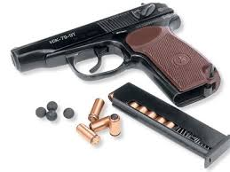

1. Позиция и стойка Ноги: Стойте на ширине плеч, с легким наклоном вперед. Одна нога может быть немного впереди другой, чтобы улучшить баланс. Тело: Легкий наклон вперед в пояснице помогает компенсировать отдачу. Руки: Одна рука держит пистолет за рукоятку, другая рука поддерживает первую снаружи (в области предплечья или пальцев), создавая крепкий, стабильный хват. 2. Хват Основной хват: Используйте всю руку для удержания пистолета. Большой палец должен плотно обхватывать рукоятку, остальные пальцы должны прижимать пистолет. Вторичная рука: Вторая рука должна поддерживать основную руку, при этом пальцы не должны перекрывать перезарядный механизм и другие органы пистолета. Положение пальцев: Убедитесь, что палец на спусковом крючке находится на правильном месте — на его середине, а не на краю. 3. Прицеливание Цель: Правильное прицеливание — это выравнивание мушки и целика. Мушка должна быть в центре целика, а целик — на уровне глаз. Использование визуального фокуса: Сосредоточьтесь на мишени, но при этом удерживайте мушку в фокусе на целике. 4. Дыхание Постарайтесь делать выстрел в момент, когда вы находитесь в промежутке между вдохом и выдохом, в состоянии покоя. Это поможет минимизировать колебания тела. 5. Спуск Легкий и плавный спуск: Не пытайтесь «тянуть» спусковой крючок. Пальцем нужно аккуратно, но уверенно нажать на спусковой крючок, не дергая его. Избегайте «перехвата» отдачи: Не пытайтесь компенсировать отдачу, резко двигая рукой — наоборот, постарайтесь держать пистолет стабильным. 6. Отдача Правильная стойка и хват помогают справиться с отдачей. Не сопротивляйтесь отдаче, а используйте ее для контроля оружия, позволяя пистолету немного подняться, но не теряя контроля. 7. Повторение и тренировка Правильная стрельба требует постоянной тренировки. Начинайте с медленных и точных выстрелов, постепенно улучшая скорость и точность. 8. Безопасность Всегда следите за безопасностью. Никогда не направляйте пистолет на людей или в неопределенную область. Убедитесь, что у вас есть надежное место для стрельбы и правильная защита для глаз и ушей. Стрельба из пистолета — это не только физическая активность, но и контроль над своим состоянием, вниманием и концентрацией. Тренируясь, вы сможете развить уверенность и улучшить свои навыки.
